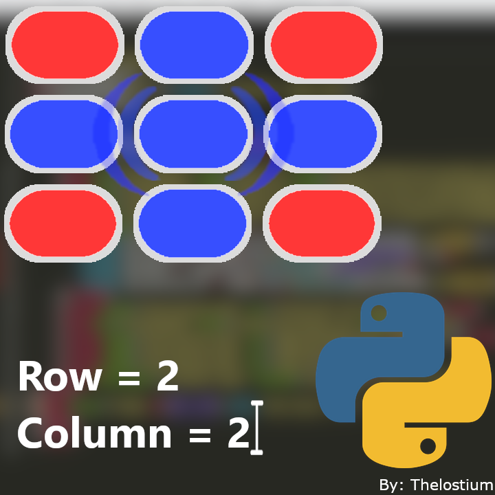

Mi primer projecto
Este es mi primer projecto que hice en python

Se trata de un juego de puntos que hise en python vanilla el cual, se que no es completo,
pero seria un inicio en un bucle divertido :3
Link al repo de github:
github.com/Thelostium/WinDotPuzzle